24
强化学习简介
在这一章中，我们将介绍强化学习 ( RL )的基本概念，这是一套允许代理学习如何在未知环境中行为的方法，这得益于在每个可能的行动后提供的奖励。RL 已经被研究了几十年，但在过去几年中它已经成熟为一种强大的方法，随着进步，它可以将深度学习模型与标准(通常很简单)算法结合起来，以解决极其复杂的问题(例如学习如何完美地玩 Atari 游戏)。
特别是，我们将讨论:
- 马尔可夫决策过程的概念 ( MDP )
- 环境、主体、政策和回报的概念
- 策略迭代算法
- 值迭代算法
- TD(0)算法
我们现在可以介绍表征强化学习场景的主要概念，重点关注每个元素的特征以及它们如何相互作用以达到全局目标。
RL 的基本概念
想象一下，你想学骑自行车，向朋友寻求建议。他们解释了齿轮如何工作，如何释放刹车和其他一些技术细节。最后，你问保持平衡的秘诀。
你期待什么样的答案？在一个假想的监督世界中，你应该能够通过将结果与精确的参考值进行比较，完美地量化你的行动并纠正错误。在现实世界中，你不知道你行为背后的数量，最重要的是，你永远不会知道什么是正确的价值。
提高抽象层次，我们正在考虑的场景可以描述为:一个通用代理在一个环境中执行动作，并接收与其动作能力成比例的反馈。根据这个反馈,代理可以修正其行为，以达到特定的目标。下图显示了这一基本模式:
基本 RL 模式
回到我们最初的例子，当你第一次骑自行车并试图保持平衡时，你会注意到错误的运动导致坡度增加，这反过来增加了重力的水平分量，横向推动自行车。由于垂直分量被补偿，结果是当自行车完全落到地面时旋转结束。然而，由于你可以用你的腿来控制你的平衡，当自行车开始下落时，由于牛顿第三定律，你腿上的力增加，你的大脑知道有必要向相反的方向移动。
即使这个问题可以很容易地用物理定律来表达，也没有人通过计算力和动量来学习骑自行车。这是 RL 的主要概念之一:主体必须始终考虑一条信息来做出选择，这条信息通常被定义为代表环境所提供的响应的奖励。如果行动是正确的，奖励将是积极的，否则，它将是消极的。在收到奖励后，代理人可以微调策略，称为政策，以最大化预期的未来奖励。
例如，在几次骑行后，你将能够轻微移动你的身体，以便在转弯时保持平衡，但在开始时，你可能需要伸展你的腿以避免摔倒。
因此，你最初的政策建议了一个不正确的行动，得到了反复的负面回报；所以你的大脑通过增加选择另一个动作的概率来纠正它。这种方法的隐含假设是，代理人总是理性的，这意味着其目标是最大化其行动的预期回报(没有人决定从自行车上摔下来只是为了了解它的感觉)。
在讨论 RL 系统的单个组件之前，有必要添加几个基本假设。第一个是一个代理可以重复经历无限次。换句话说，我们假设只有当我们有足够的时间时，才有可能学习到一个有效的策略(可能是最优的)。显然，这在动物世界是不可接受的，我们都知道许多经历是极其危险的；但是，这个假设对于证明某些算法的收敛性是必要的。事实上，次优策略有时可以很快学会，但需要重复多次才能达到最优。
在真实的人工系统中，我们总是在有限次迭代后停止学习过程，但如果一些经验阻止智能体继续与环境交互，则几乎不可能找到有效的解决方案。由于许多任务都有最终状态(肯定或否定)，我们假设代理可以利用先前学习的经验，播放任意数量的片段(有点类似于监督学习的时代)。
第二个假设更专业一点，通常被称为马尔可夫性质。
马尔可夫决策过程
当代理与环境交互时，它会观察到一系列状态。尽管这看起来有点矛盾，但我们假设每个状态都是有状态的。我们可以用一个简单的例子来解释这个概念；假设你正在填充一个油箱，每 5 秒钟测量一次液位。想象在 t = 0，水位 L = 10，水正在流入。在 t = 1 时你期望什么？显然，LT61】10。换句话说，在没有外部未知原因的情况下，我们假设一个状态包含先前的历史，因此该序列即使被离散化，也表示不允许跳跃的连续演化。
当一个 RL 任务满足这个属性时，它被称为一个马尔可夫决策过程 ( MDP )，并且很容易使用简单的算法来评估行动。幸运的是，大多数自然事件可以被建模为 MDP(当你走向一扇门时，在正确方向上的每一步都必须减少距离)，但是有一些游戏是隐式无状态的。
例如，如果您想使用 RL 算法来学习如何猜测独立事件的概率序列的结果(如投掷硬币)，结果可能会非常错误。原因很清楚:任何国家都是独立于前一个国家的，任何试图建立历史的努力都是失败的。因此，如果你观察到 0，0，0，0 的序列...除非在考虑了事件发生的可能性之后，你认为硬币已经装满，否则你没有理由增加押在 0 上的价值。
然而，如果没有理由这样做，这个过程就不是 MDP，每一集(事件)都是完全独立的。我们做出的所有假设，无论是隐含的还是明确的，都是基于这个基本概念，所以在评估新的、不寻常的场景时要注意，因为你可能会发现采用特定的算法在理论上是不合理的。
环境
环境是主体必须在其中达到其目标的实体。出于我们的目的，通用环境是一个系统，它接收一个输入动作， a t (我们使用索引 t ，因为这是一个自然时间过程)，并输出一个由状态、st+1和奖励、rt+1组成的元组。这两个元素是提供给代理以做出下一个决策的仅有的信息。如果我们正在处理一个 MDP，并且可能的动作集 A 和状态集 S 是离散的和有限的，那么问题就是一个定义的有限 MDP(在许多连续的情况下，可以通过离散化空间将问题视为有限 MDP)。如果有最终状态，这个任务被称为情节性的，一般来说，目标是在最短的时间内达到一个积极的最终状态或最大化一个分数。代理和环境之间的循环交互模式如下图所示:
主体-环境交互模式
环境的一个非常重要的特征是它的内部性质。它可以是确定的，也可以是随机的。确定性环境的特征在于一个函数，该函数将特定状态下的每个可能动作stt关联到一个明确定义的后继动作sT42t+1，并带有精确的回报rt+1:
相反，随机环境的特征在于当前状态stt和给定动作at 的一组可能的后继者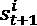之间的转移概率:
如果一个状态sT2 I 有一个转移概率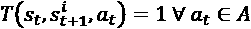，这个状态被定义为吸收。一般来说，情节任务中的所有结束状态都被建模为吸收状态，以避免任何进一步的转换。当一个情节不限于固定的步数时，确定其结束的唯一标准是检查代理是否达到吸收状态。由于我们不知道哪个状态将会是后继状态，所以有必要考虑所有可能奖励的期望值，考虑初始状态sT7】t 和动作aT11】t:
一般来说，管理随机环境更容易，因为通过将除了对应于实际后继者的概率之外的所有概率设置为零(例如，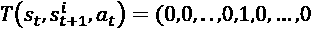)，它们可以立即转换为确定性环境。同理，可以将预期收益设为等于rT16】t+1。对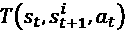以及 的了解对于采用一些特定的算法来说是必要的，但是当找到适合环境的模型需要极其复杂的分析时，这可能会成为问题。在所有这些情况下，可以采用无模型方法，因此，环境被视为黑盒，其在时间 t (在代理att-1执行动作之后)的输出是评估策略的唯一可用信息。
的了解对于采用一些特定的算法来说是必要的，但是当找到适合环境的模型需要极其复杂的分析时，这可能会成为问题。在所有这些情况下，可以采用无模型方法，因此，环境被视为黑盒，其在时间 t (在代理att-1执行动作之后)的输出是评估策略的唯一可用信息。
奖励
我们已经看到，奖励(有时负奖励被称为惩罚，但最好使用标准化的符号)是环境在每次行动后提供的唯一反馈。然而，使用奖励有两种不同的方法。第一个是一个非常短视的代理人的策略，只考虑刚刚收到的回报。
这种方法的主要问题显然是无法考虑可以带来很高回报的较长序列。例如，一个代理必须以负奖励(例如，-0.1)遍历几个状态，但在它们之后，它们到达一个具有非常正的奖励(例如+5.0)的状态。目光短浅的代理人无法找到最佳策略，因为它只是试图避免眼前的负面回报。另一方面，最好假设单个奖励包含了遵循相同政策将获得的未来奖励的一部分。这个概念可以通过引入折扣奖励来表达，其定义为:
在前面的表达式中，我们假设了一个无限期的贴现因子 ，它是一个介于 0 和 1 之间的实数(不包括在内)。当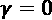时，代理人是极度短视的，因为RT37】t=RT41】t+1时，当前报酬以与时间步长成反比的方式考虑未来贡献贴现。这样，非常近的奖励会比非常远的奖励有更高的权重。如果所有奖励的绝对值受一个最大即时绝对奖励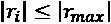的限制，前面的表达式将总是有界的。事实上，考虑到一个几何级数的性质，我们得到:
，它是一个介于 0 和 1 之间的实数(不包括在内)。当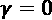时，代理人是极度短视的，因为RT37】t=RT41】t+1时，当前报酬以与时间步长成反比的方式考虑未来贡献贴现。这样，非常近的奖励会比非常远的奖励有更高的权重。如果所有奖励的绝对值受一个最大即时绝对奖励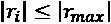的限制，前面的表达式将总是有界的。事实上，考虑到一个几何级数的性质，我们得到:
显然，正确选择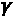在许多问题中是一个至关重要的因素，不能简单地一概而论。正如在许多其他类似的情况下，我建议测试不同的值，选择一个最小化收敛速度，同时产生一个准最优策略。当然，如果任务是长度为T(eI)的片断，那么折扣奖励变成:
Python 中的棋盘环境
我们将考虑一个基于代表隧道的棋盘环境的例子。代理的目标是达到结束状态(右下角)，避开 10 个处于负吸收状态的井。奖励是:
- 结束状态 : +5.0
- 井 : -5.0
- 所有其他状态 : -0.1
为所有非终结状态选择一个较小的负奖励有助于迫使代理前进，直到达到最大(最终)奖励。让我们开始模拟一个具有 5 × 15 矩阵的环境:
import numpy as np
width = 15
height = 5
y_final = width - 1
x_final = height - 1
y_wells = [0, 1, 3, 5, 5, 7, 9, 11, 12, 14]
x_wells = [3, 1, 2, 0, 4, 1, 3, 2, 4, 1]
standard_reward = -0.1
tunnel_rewards = np.ones(shape=(height, width)) * \
standard_reward
for x_well, y_well in zip(x_wells, y_wells):
tunnel_rewards[x_well, y_well] = -5.0
tunnel_rewards[x_final, y_final] = 5.0
下图显示了环境的图形表示(根据奖励):
隧道环境中的奖励
代理可以向四个方向移动:上、下、左、右。显然，在这种情况下，环境是确定的，因为每个动作都将代理移动到预定义的单元。我们假设每当一个动作被禁止时(比如当代理人在第一列时试图向左移动)，后继状态都是同一个(有相应的奖励)。
政策
从形式上来说，策略是代理为了最大化其回报而遵循的确定性或随机性法律。按照惯例，所有策略都用字母 表示。确定性策略通常是输出精确动作的当前状态的函数:
表示。确定性策略通常是输出精确动作的当前状态的函数:
类似于环境，随机策略输出每个行动的概率(在这种情况下，我们假设我们使用有限的 MPD):
然而，与环境相反，一个主体必须总是选择一个特定的行动，将任何随机的政策转化为一系列确定的选择。一般来说，其中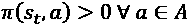的策略被称为软策略，它通常在训练过程中非常有用，因为它允许更灵活的建模，而不会过早选择次优行动。相反，当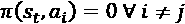和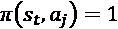出现时，政策也被定义为硬性。这种转换可以通过多种方式实现，但最常见的方式是定义一个对值贪婪的策略(我们将在下一节讨论这个概念)。这意味着，在每一步，政策将选择最大化继承国价值的行动。显然，这是一个非常理性的方法，但可能过于务实。事实上，当一些状态的值不变时，贪婪的策略将总是迫使代理执行相同的动作。
这种问题被称为探索-开发困境，当允许代理人评估最初看起来不是最佳的替代策略会更好时，就会出现这种问题。换句话说，我们希望代理在开始利用策略之前探索环境，以了解策略是否真的是最佳策略，或者是否存在隐藏的替代方案。为了解决这个问题，可以采用一种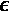-贪婪策略，其中值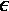被称为探索因子，代表一种概率。
在这种情况下，策略将选择一个概率为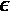的随机动作和一个概率为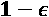的贪婪动作。一般来说，在训练过程的开始， 保持非常接近 1.0，以激励探索，当策略变得更加稳定时，它逐渐减小。在许多深度 RL ( DRL )应用中，这种方法是基本的，尤其是在没有环境模型的时候。原因是贪婪策略最初可能是错误的，在强制执行确定性决策之前，有必要允许代理探索许多可能的状态和动作序列。
保持非常接近 1.0，以激励探索，当策略变得更加稳定时，它逐渐减小。在许多深度 RL ( DRL )应用中，这种方法是基本的，尤其是在没有环境模型的时候。原因是贪婪策略最初可能是错误的，在强制执行确定性决策之前，有必要允许代理探索许多可能的状态和动作序列。
策略迭代
在这一节中，我们将分析一种策略，以便根据对环境的全面了解(根据转移概率和预期回报)找到最优策略。第一步是定义一个可以用来构建贪婪策略的方法。让我们假设我们正在使用一个有限的 MDP 和一个通用的策略 ；我们可以将一个状态stt的内在价值定义为代理人从sT22】t 开始并遵循随机策略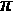所获得的期望贴现收益:
；我们可以将一个状态stt的内在价值定义为代理人从sT22】t 开始并遵循随机策略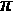所获得的期望贴现收益:
在这种情况下，我们假设，当代理人将跟随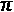时，如果从 s a 开始的预期收益大于从 s b 开始获得的预期收益，则状态sT3】a 比 s b 更有用。不幸的是，当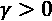时，试图使用先前的定义直接找到每个状态的值几乎是不可能的。然而，这是一个可以使用动态规划来解决的问题(关于进一步的信息，请参考 R. A. Howard，动态规划和马尔可夫过程，麻省理工学院出版社，1960)，这允许我们迭代地解决问题。
特别是，我们需要把前面的公式变成一个贝尔曼方程:
右边的第一项可以表示为:
换句话说，它是考虑到代理处于状态stt的所有期望收益的加权平均值，并评估所有可能的动作和随之而来的状态转换。第二学期，我们需要一个小技巧。假设我们从st+1开始，这样期望值对应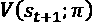；然而，由于总和从 s t 开始，我们需要考虑从 s t 开始的所有可能的转换。在这种情况下，我们可以将术语改写为:
同样，第一项考虑了从 s t 开始(并以st+1结束)的所有可能的转换，而第二项是每个结束状态的值。因此，完整的表达式变成:
相反，对于确定性策略，公式为:
前面的方程是有限 MDP 的一般离散 Bellman 方程的特殊情况，可以表示为应用于值向量的向量运算符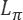:
很容易证明存在唯一的不动点对应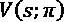，所以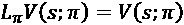。然而，为了求解该系统，我们需要同时考虑所有方程，因为在贝尔曼方程的左侧和右侧都有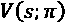项。有没有可能将这个问题转化为一个迭代过程，以便前一次计算可以用于下一次计算？答案是肯定的，这是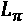的一个重要性质的结果。让我们考虑在时间 t 和 t +1 计算的两个值向量之间的差的无穷范数:
作为折扣因子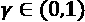，Bellman 运算符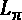是一个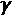的缩写，它将参数之间的距离缩小了一个因子 (它们变得越来越相似)。巴拿赫不动点定理指出，度量空间 D 上的收缩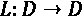承认唯一的不动点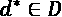，这可以通过将收缩重复应用于任何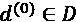来找到。
(它们变得越来越相似)。巴拿赫不动点定理指出，度量空间 D 上的收缩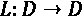承认唯一的不动点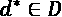，这可以通过将收缩重复应用于任何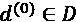来找到。
因此，我们知道存在一个唯一的不动点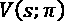，这是我们研究的目标。如果我们现在考虑一个一般的起点 V ( t )，并且我们计算与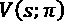的差的范数，我们得到:
重复这个过程直到 t = 0，我们得到:
当在 V ( t )和之间的距离上继续迭代时，项变得越来越小，授权我们使用迭代方法而不是一次性封闭方法。因此，贝尔曼方程变成了:
这个公式允许我们找到每个状态的值(这个步骤正式称为策略评估)，但是当然，它需要一个策略。在第一步中，我们可以随机选择操作，因为我们没有任何其他信息，但是在一个完整的评估周期之后，我们可以开始定义一个关于值的贪婪策略。为了实现这个目标，我们需要在 RL 中引入一个非常重要的概念，Q 函数(不得与 EM 算法中定义的 Q 函数相混淆)，它被定义为一个代理人从状态 s t 开始，选择一个特定动作在:
定义与非常相似，但是在这种情况下，我们将动作 a t 作为变量包含在内。显然，可以通过简单地删除策略/动作总和来定义的贝尔曼方程:
萨顿和巴尔托(在萨顿 R. S .，巴尔托 A. G .，强化学习，麻省理工学院出版社，1998 年)证明了一个简单但非常重要的定理(称为策略改进定理)，该定理指出，给定确定性策略和，如果，那么优于或等于。证明很紧凑，可以在他们的书里找到，然而结果可以很直观的理解。如果我们考虑一个状态序列，和，而，则策略至少等于，并且如果至少不等式是严格的，则变得更好。反之，如果，这意味着和至少有一个状态sI，其中。
因此，在一个完整的策略评估周期之后，我们被授权将一个新的贪婪策略定义为:
这个步骤被称为策略改进，其目标是将与每个状态相关联的动作设置为导致向具有最大值的后续状态转移的动作。不难理解，当发生时，最优政策将保持稳定。事实上，当时，Q 函数将收敛到由确定的稳定不动点，而项将总是选择相同的动作。然而，如果我们从一个随机的政策开始，一般来说，一个单一的政策评估周期不足以确保收敛。因此，在策略改进步骤之后，通常需要重复评估，并继续交替两个阶段，直到策略变得稳定(这就是为什么该算法被称为策略迭代)。一般来说，收敛速度相当快，但实际速度取决于问题的性质、状态和动作的数量以及奖励的一致性。
完整的策略迭代算法(由萨顿和巴尔托提出)是:
- 设置初始确定性随机策略。
- 设置初始值数组。
- 设置公差阈值 Thr (例如 Thr = 0.0001)。
- 设置最大迭代次数NtITER。
- 设定计数器 e = 0。
- 而e<NITER:
- e = e + 1。
- 而Avg(|V(s)—Vold(s)|)>Thr:
- 设置。
- 执行策略评估步骤，从 V 旧 ( s )读取当前值，并更新 V ( s )。
- 设置
 。
。 - 执行策略改进步骤。
- 如果:
- 设置
- 中断(主 while 循环)
- 输出最终确定性策略。
在这种情况下，正如我们对环境有充分的认识一样；不需要探索阶段。该策略总是被利用，因为它被构建为贪婪于真实值(在时获得)。
棋盘环境中的策略迭代
我们希望应用策略迭代算法，以便为隧道环境找到最佳策略。让我们从定义一个随机初始策略和一个所有值(除了终端状态)都等于 0 的值矩阵开始:
import numpy as np
nb_actions = 4
policy = np.random.randint(0, nb_actions,
size=(height, width)).\
astype(np.uint8)
tunnel_values = np.zeros(shape=(height, width))
初始随机策略( t = 0)如下图所示:
初始( t = 0)随机策略
由表示的状态代表井，而最后的正状态由大写字母 E 表示。
因此，矩阵的初始值( t = 0)为:
初始值矩阵( t = 0)
此时，我们需要定义执行策略评估和改进步骤的功能。由于环境是确定性的，由于一般的转移概率，过程稍微简单一些:
同样，策略是确定性的，只考虑一个动作。执行策略评估步骤，冻结当前值，用V()更新整个矩阵Vt+1】；但是，也可以立即使用新值。我邀请读者测试这两种策略，以便找到最快的方法。在这个例子中，我们使用了一个贴现因子(不言而喻，一个有趣的练习包括测试不同的值，比较评估过程的结果和最终行为):
import numpy as np
def is_final(x, y):
if (x, y) in zip(x_wells, y_wells) \
or (x, y) == (x_final, y_final):
return True
return False
下面的代码片段显示了策略评估的代码:
def policy_evaluation():
old_tunnel_values = tunnel_values.copy()
for i in range(height):
for j in range(width):
action = policy[i, j]
if action == 0:
if i == 0:
x = 0
else:
x = i - 1
y = j
elif action == 1:
if j == width - 1:
y = width - 1
else:
y = j + 1
x = i
elif action == 2:
if i == height - 1:
x = height - 1
else:
x = i + 1
y = j
else:
if j == 0:
y = 0
else:
y = j - 1
x = i
reward = tunnel_rewards[x, y]
tunnel_values[i, j] = \
reward + \
(gamma * old_tunnel_values[x, y])
以类似的方式，我们可以定义执行策略改进步骤所需的代码:
def policy_improvement():
for i in range(height):
for j in range(width):
if is_final(i, j):
continue
values = np.zeros(shape=(nb_actions,))
values[0] = (tunnel_rewards[i - 1, j] +
(gamma *
tunnel_values[i - 1, j])) \
if i > 0 else -np.inf
values[1] = (tunnel_rewards[i, j + 1] +
(gamma *
tunnel_values[i, j + 1])) \
if j < width - 1 else -np.inf
values[2] = (tunnel_rewards[i + 1, j] +
(gamma *
tunnel_values[i + 1, j])) \
if i < height - 1 else -np.inf
values[3] = (tunnel_rewards[i, j - 1] +
(gamma *
tunnel_values[i, j - 1])) \
if j > 0 else -np.inf
policy[i, j] = np.argmax(values).\
astype(np.uint8)
一旦定义了函数，我们就开始策略迭代周期(最大历元数， N iter = 100，000，容差阈值等于 10 -5 ):
nb_max_epochs = 100000
tolerance = 1e-5
e = 0
gamma = 0.85
old_policy = np.random.randint(0,
nb_actions,
size=(height, width)).astype(np.uint8)
while e < nb_max_epochs:
e += 1
old_tunnel_values = tunnel_values.copy()
policy_evaluation()
if np.mean(np.abs(tunnel_values -
old_tunnel_values)) < \
tolerance:
old_policy = policy.copy()
policy_improvement()
if np.sum(policy - old_policy) == 0:
break
在过程结束时(在这种情况下，算法在 182 次迭代后收敛，但是该值可以随着不同的初始策略而改变)，值矩阵是:
最终值矩阵
通过分析这些值，可以看出算法是如何发现它们是单元格和结束状态之间距离的隐函数的。此外，该策略总是避开井，因为最大值总是在相邻的州中找到。通过绘制最终策略，很容易验证这种行为:
最终政策
选择一个随机的初始状态，代理将总是到达结束状态，避开井并确认策略迭代算法的最优性。
值迭代
值迭代算法提供了策略迭代的另一种方法。主要假设基于经验观察，即策略评估步骤收敛得相当快，并且在固定数量的步骤(通常为 1)之后停止该过程是合理的。事实上，策略迭代可以被认为是一个游戏，其中第一个参与者试图找到考虑稳定策略的正确值，而另一个参与者创建了一个新策略，该策略对新值很贪婪。
显然，第二步损害了先前评估的有效性，迫使第一个玩家重复这个过程。然而，由于贝尔曼方程使用单个不动点，该算法收敛到一个解，该解的特征在于策略不再改变的事实，因此，评估变得稳定。这个过程可以通过删除策略改进步骤并以贪婪的方式继续评估来简化。形式上，每个步骤都基于以下更新规则:
现在迭代不再考虑策略(隐含地假设它会对值产生贪婪)，选择V(t+1)作为所有V(t)(at)中最大可能的值。换句话说，值迭代通过选择对应于可能()被选择的动作的值来预测由策略改进步骤做出的选择。将上一节给出的收敛性证明推广到这种情况并不困难，因此，，就像在策略迭代中一样。然而，迭代的平均次数通常更少，因为我们从随机策略开始，可以对比价值迭代过程。当值变得稳定时，最优贪婪策略简单地获得为:
这一步在形式上相当于一个策略改进迭代，然而，它只在过程结束时进行一次。
全值迭代算法(由萨顿和巴尔托提出)是:
- 设置初始值数组。
- 设置一个公差阈值 Thr (例如 Thr = 0.0001)。
- 设置最大迭代次数NITERt。
- 设置计数器 e = 0。
- 而eT78】T39】NT41】ITER:
- e = e + 1。
- 而Avg(|V(s)—VT55】old(s)|)>Thr:
- 设置。
- 执行数值评估步骤，从VT64】旧 ( s )读取当前数值，并更新 V ( s )。
- 输出最终确定性策略。
棋盘环境中的值迭代
为了测试这个算法，我们需要设置一个初始值矩阵，所有值都等于 0(它们也可以随机选择，但是，由于我们没有关于最终配置的任何先验信息，每个初始选择在概率上是等价的):
import numpy as np tunnel_values = np.zeros(shape=(height, width))
此时，我们可以定义两个函数来执行价值评估和最终策略选择(函数is_final()是上一个示例中定义的函数):
import numpy as np
def is_final(x, y):
if (x, y) in \
zip(x_wells, y_wells) or \
(x, y) == (x_final, y_final):
return True
return False
我们现在可以定义价值评估函数:
def value_evaluation():
old_tunnel_values = tunnel_values.copy()
for i in range(height):
for j in range(width):
rewards = np.zeros(shape=(nb_actions,))
old_values = np.zeros(shape=(nb_actions,))
for k in range(nb_actions):
if k == 0:
if i == 0:
x = 0
else:
x = i - 1
y = j
elif k == 1:
if j == width - 1:
y = width - 1
else:
y = j + 1
x = i
elif k == 2:
if i == height - 1:
x = height - 1
else:
x = i + 1
y = j
else:
if j == 0:
y = 0
else:
y = j - 1
x = i
rewards[k] = tunnel_rewards[x, y]
old_values[k] = old_tunnel_values[x, y]
new_values = np.zeros(shape=(nb_actions,))
for k in range(nb_actions):
new_values[k] = rewards[k] + \
(gamma * old_values[k])
tunnel_values[i, j] = np.max(new_values)
我们需要的下一个函数是策略选择函数，如下面的代码片段所示:
def policy_selection():
policy = np.zeros(shape=(height, width)).\
astype(np.uint8)
for i in range(height):
for j in range(width):
if is_final(i, j):
continue
values = np.zeros(shape=(nb_actions,))
values[0] = (tunnel_rewards[i - 1, j] +
(gamma *
tunnel_values[i - 1, j])) \
if i > 0 else -np.inf
values[1] = (tunnel_rewards[i, j + 1] +
(gamma *
tunnel_values[i, j + 1])) \
if j < width - 1 else -np.inf
values[2] = (tunnel_rewards[i + 1, j] +
(gamma *
tunnel_values[i + 1, j])) \
if i < height - 1 else -np.inf
values[3] = (tunnel_rewards[i, j - 1] +
(gamma *
tunnel_values[i, j - 1])) \
if j > 0 else -np.inf
policy[i, j] = np.argmax(values).\
astype(np.uint8)
return policy
主要区别在于value_evaluation()函数，它现在必须考虑所有可能的后续状态，并选择对应于导致具有最高值的状态的动作的值。相反，policy_selection()函数相当于policy_improvement()，但是因为它只被调用一次，所以它直接输出最终的最优策略。此时，我们可以运行一个训练周期(假设常数与之前相同):
e = 0
policy = None
while e < nb_max_epochs:
e += 1
old_tunnel_values = tunnel_values.copy()
value_evaluation()
if np.mean(np.abs(tunnel_values -
old_tunnel_values)) < \
tolerance:
policy = policy_selection()
break
最终值配置(127 次迭代后)如下图所示:
最终值矩阵
和前面的例子一样，最终值配置是每个状态和结束状态之间距离的函数，但是在这种情况下，的选择不是最佳的。事实上，接近最终状态的井不再被认为是非常危险的。绘制最终策略可以帮助我们理解行为:
最终政策
正如预期的那样，远离目标的井被避开，但是接近最终状态的两口井被接受为合理的惩罚。这是因为价值迭代算法对价值和折扣因子非常贪婪；负面状态的影响可以通过最终的奖励来补偿。在许多场景中，这些状态是吸收性的，因此它们的隐含回报是或，这意味着没有其他动作可以改变最终值。
我邀请读者用不同的贴现因子重复这个例子(记住一个有的代理人是非常短视的，会避开任何障碍，甚至降低政策的效率)，并改变最终状态的值。而且，你应该能够回答这个问题:当标准奖励(其默认值为-0.1)增加或减少时，代理人的行为是什么？
TD(0)算法
动态规划算法的一个问题是需要在状态和转移概率方面完全了解环境。不幸的是，在许多情况下，这些信息在直接体验之前是未知的。特别是，状态可以通过让代理探索环境来发现，但是转移概率要求我们计算到某个状态的转移次数，而这通常是不可能的。此外，如果代理已经学习了良好的初始策略，则具有吸收状态的环境可以防止访问许多状态。例如，在一个可以被描述为情节性 MDP 的游戏中，代理人发现了环境，同时学习如何前进而不会以消极的吸收状态结束。
这些问题的一般解决方案由不同的评估策略提供，称为时间差 ( TD ) RL。在这种情况下，我们从一个空的值矩阵开始，并让代理遵循一个关于值的贪婪策略(除了初始策略，它通常是随机的)。一旦代理观察到一个转换，由于一个动作aT9】t，它用一个奖励更新V(sT15】I)的估计。这个过程是分阶段进行的(这是最自然的方式)，当完成了最大数量的步骤或者达到了终止状态时结束。特别是，TD(0)算法根据以下规则更新该值:
常数 被限制在 0 和 1 之间，并作为学习率。每次更新考虑相对于当前值V(t)(sI)的变化，该变化与实际回报和先前估计之间的差异成比例。术语类似于先前方法中使用的术语，代表给定当前回报的预期价值和从继承国开始的贴现价值。但是，由于V(t)(sj)是一个估计值，因此该过程是基于先前值的引导。换句话说，我们从一个估计开始确定下一个，这个估计应该更接近稳定的不动点。事实上，TD(0)是基于序列(通常称为备份)的 TD 算法家族中最简单的例子，该序列可以概括为(考虑到 k 步):
被限制在 0 和 1 之间，并作为学习率。每次更新考虑相对于当前值V(t)(sI)的变化，该变化与实际回报和先前估计之间的差异成比例。术语类似于先前方法中使用的术语，代表给定当前回报的预期价值和从继承国开始的贴现价值。但是，由于V(t)(sj)是一个估计值，因此该过程是基于先前值的引导。换句话说，我们从一个估计开始确定下一个，这个估计应该更接近稳定的不动点。事实上，TD(0)是基于序列(通常称为备份)的 TD 算法家族中最简单的例子，该序列可以概括为(考虑到 k 步):
由于我们使用单一回报来逼近预期贴现回报，TD(0)通常被称为一步 TD 方法(或一步备份)。考虑到更多的后续奖励或替代策略，可以构建更复杂的算法。我们将在下一章分析一个称为 TD(λ)的通用变量，并解释为什么这个算法对应于一个选择。TD(0)已经被证明是收敛的，即使证明(可以在 Van Hasselt H .，Wiering M. A .，Convergence of Model-Based Temporal Difference Learning for Control，Proceedings of 2007 IEEE Symposium on Approximate Dynamic Programming and Reinforcement Learning(ADPRL 2007))中找到基于模型的方法)更复杂，因为它需要考虑马尔可夫过程的演变。事实上，在这种情况下，我们正在用截断估计和自举值V(sj)来逼近预期贴现回报，这在最初(以及对于大量迭代)是不稳定的。然而，假设收敛，我们得到:
最后一个公式表达了状态 s i 的值，假设贪婪最优策略迫使代理执行导致转移到 s j 的动作。当然，在这一点上，自然要问算法在什么条件下收敛。事实上，我们考虑的是偶发任务，只有当代理无限次地执行到sI 的转换，无限次地选择所有可能的动作，估计才能正确。这样一个条件经常被表述为:政策必须是贪婪于无限探索的极限 ( GLIE )。换句话说，只有当代理人能够无限制地探索环境无限次数时，真正的贪婪才能达到渐近状态。
这可能是 TD 强化学习的最重要的限制，因为在现实生活场景中，一些状态可能是非常不可能的，因此，估计永远不会积累收敛到实际值所需的经验。我们将在下一章分析解决这个问题的一些方法，但是在我们的例子中，我们采用随机开始。换句话说，由于策略是贪婪的，并且总是可以避免某些状态，我们强迫代理在随机的非终结单元中开始每一集。这样，即使有贪婪的政策，我们也允许深入探索。每当这种方法不可行时(例如，因为环境动态不可控)，勘探-开发困境只能通过采用-贪婪策略来解决，该策略选择一部分次优(甚至错误)行动。通过这种方式，有可能观察到更多的转换以更慢的收敛为代价。
然而，正如萨顿和巴尔托指出的，TD(0)收敛于由 MDP 确定的价值函数的最大似然估计，找到模型的隐含转移概率。因此，如果观察数量足够多，TD(0)可以快速找到最优策略，但同时，如果一些夫妇的状态行为从未经历过(或很少经历过)，它也对有偏估计更敏感。在我们的例子中，我们不知道初始状态是什么，因此选择一个固定的起点会产生一个非常严格的策略，几乎完全不能管理嘈杂的情况。
例如，如果起始点被改变到相邻的(但从未探索过的)单元，则算法可能无法找到到达正终端状态的最佳路径。另一方面，如果我们知道动态是明确定义的，TD(0)将迫使代理选择在给定当前环境知识的情况下最有可能产生最佳结果的动作。如果动态是部分随机的，那么考虑到一系列事件，可以理解-贪婪策略的优势，在这些事件中，代理经历相同的转变，并且相应的值成比例地增加。例如，如果在多次经历之后环境改变了一次转变，那么当策略已经几乎稳定时，代理不得不面对全新的经历。
这种纠正需要很多次，由于这种随机变化的概率非常低，代理人可能永远也学不会正确的行为。相反，通过选择一些随机动作，遇到类似状态(或者甚至相同状态)的概率增加(想想一个游戏，其中状态由屏幕截图表示)，并且该算法对于非常不可能的转变可以变得更加鲁棒。
完整的 TD(0)算法是:
- 设置初始确定性随机策略。
- 设置初始值数组。
- 设置第 N 集第集第集。
- 设置每集的最大步数NT27】max。
- 设置一个常量(例如)。
- 设置一个常量(例如)。
- 设置计数器 e = 0。
- 对于 i = 1 到 N 集:
- 观察初始状态sT43】I。
- 而sT2j 是非终结的并且eT32】T6】NT8】max:
- e = e + 1。
- 选择动作。
- 观察转换。
- 更新状态sT18】I 的值函数。
- 设置sT22】I=sj。
- 将策略更新为关于值函数的贪婪。
此时，我们可以在棋盘环境中测试 TD(0)算法。
棋盘环境中的 TD(0)
在棋盘环境中测试 TD(0)的第一步是定义一个初始随机策略，以及一个所有元素都等于 0 的值矩阵:
import numpy as np
policy = np.random.randint(0,
nb_actions,
size=(height, width)).\
astype(np.uint8)
tunnel_values = np.zeros(shape=(height, width))
由于我们希望在每集开始时选择一个随机的起始点，我们需要定义一个助手函数，该函数必须排除终端状态(所有的常数都与前面定义的相同):
import numpy as np
xy_grid = np.meshgrid(np.arange(0, height),
np.arange(0, width),
sparse=False)
xy_grid = np.array(xy_grid).T.reshape(-1, 2)
xy_final = list(zip(x_wells, y_wells))
xy_final.append([x_final, y_final])
xy_start = []
for x, y in xy_grid:
if (x, y) not in xy_final:
xy_start.append([x, y])
xy_start = np.array(xy_start)
def starting_point():
xy = np.squeeze(xy_start[
np.random.randint(0,
xy_start.shape[0],
size=1)])
return xy[0], xy[1]
现在我们可以实现评估单集的函数(将最大步数设置为 500，常量设置为):
max_steps = 1000
alpha = 0.25
def episode():
(i, j) = starting_point()
x = y = 0
e = 0
while e < max_steps:
e += 1
action = policy[i, j]
if action == 0:
if i == 0:
x = 0
else:
x = i - 1
y = j
elif action == 1:
if j == width - 1:
y = width - 1
else:
y = j + 1
x = i
elif action == 2:
if i == height - 1:
x = height - 1
else:
x = i + 1
y = j
else:
if j == 0:
y = 0
else:
y = j - 1
x = i
reward = tunnel_rewards[x, y]
tunnel_values[i, j] += \
alpha * (reward +
(gamma * tunnel_values[x, y]) -
tunnel_values[i, j])
if is_final(x, y):
break
else:
i = x
j = y
确定关于值的贪婪策略的函数与先前示例中已经实现的相同；但是，我们报告它是为了保证示例的一致性:
def policy_selection():
for i in range(height):
for j in range(width):
if is_final(i, j):
continue
values = np.zeros(shape=(nb_actions,))
values[0] = (tunnel_rewards[i - 1, j] +
(gamma *
tunnel_values[i - 1, j])) \
if i > 0 \
else -np.inf
values[1] = (tunnel_rewards[i, j + 1] +
(gamma *
tunnel_values[i, j + 1])) \
if j < width - 1 \
else -np.inf
values[2] = (tunnel_rewards[i + 1, j] +
(gamma *
tunnel_values[i + 1, j])) \
if i < height - 1 \
else -np.inf
values[3] = (tunnel_rewards[i, j - 1] +
(gamma *
tunnel_values[i, j - 1])) \
if j > 0 \
else -np.inf
policy[i, j] = np.argmax(values).\
astype(np.uint8)
此时，我们可以开始一个 5000 集的训练周期:
n_episodes = 5000
for _ in range(n_episodes):
episode()
policy_selection()
最终价值矩阵如下图所示:
随机开始的最终值矩阵
与前面的示例一样，最终值与距离最终正状态的距离成反比。让我们分析产生的策略，以了解算法是否收敛到一致的解决方案:
随机启动的最终策略
可以看出，开始状态的随机选择允许独立于初始条件找到最佳路径。为了更好地理解这种策略的优势，让我们绘制当初始状态固定为单元格(0，0)时的最终值矩阵，对应于左上角:
具有固定初始状态(0，0)的最终值矩阵
无需任何进一步的分析，就可以看出许多州从未被访问过，或者只被访问过几次，因此产生的策略对于特定的初始状态来说是极其贪婪的。包含等于-1.0 的值的块指示代理经常不得不选择随机动作的状态，因为值没有差别，因此用不同的初始状态求解环境可能是极其困难的。
由此产生的政策证实了这一分析:
具有固定初始状态(0，0)的最终策略
可以看出，只有当初始点允许我们穿过从(0，0)开始的轨迹时，智能体才能到达最终状态。在所有这些情况下，都有可能恢复最佳策略，即使路径比上一个示例中获得的路径更长。相反，像(0，4)这样的状态显然是策略丢失的情况。换句话说，代理人在没有任何知识或意识的情况下行动，并且成功的概率收敛到 0。作为练习，我邀请读者用不同的起点(例如，一组固定的起点)和更高的α值来测试这个算法。目标也是回答这些问题:是否有可能加快学习过程？是否有必要从所有可能的状态出发才能获得一个全局最优的策略？
总结
在这一章中，我们介绍了最重要的 RL 概念，重点是作为 MDP 的环境的数学结构，不同种类的策略以及它们如何从代理人获得的预期报酬中导出。特别地，我们将一个状态的价值定义为考虑到一个按因子γ贴现的序列的预期未来回报。同样，我们引入了 Q 函数的概念，它是当代理处于特定状态时一个动作的值。
这些概念直接采用了策略迭代算法，该算法基于假设完全了解环境的动态编程方法。这项任务分为两个阶段:在第一个过程中，代理评估给定当前策略的所有状态，而在第二个过程中，策略被更新以便对新的值函数变得贪婪。
通过这种方式，代理被迫总是选择导致最大化所获得价值的转换的动作。
我们还分析了一种称为值迭代的变体，它执行单次评估并以贪婪的方式选择策略。与前一种方法的主要区别在于，现在代理立即选择最高值，假设该过程的结果相当于策略迭代。事实上，很容易证明，在无限次转换之后，两种算法都收敛于最优值函数。
最后一种算法叫做 TD(0 ),它基于一种无模型的方法。事实上，在许多情况下，很难知道所有的转移概率，有时，甚至所有可能的状态都是未知的。该方法基于 TD 评估，在与环境交互时直接执行。如果代理可以无限次访问所有状态(显然，这只是一个理论条件)，该算法已被证明比其他方法更快地收敛到最优值函数。
在下一章，我们将继续讨论 RL 算法，介绍一些更高级的方法，这些方法可以使用深度卷积网络立即实现。
延伸阅读
- R.a .霍华德，动态规划和马尔可夫过程，麻省理工学院出版社，1960 年
- 萨顿 R. S .，巴尔托 A. G .，强化学习，麻省理工学院出版社，1998
- Van Hasselt H .，Wiering M. A .，基于模型的时间差分学习控制的收敛性，2007 年 IEEE 近似动态规划和强化学习研讨会会议录(ADPRL 2007)